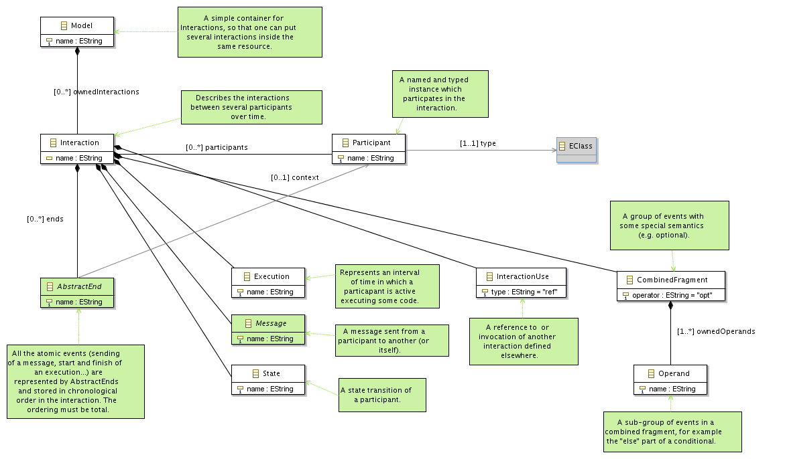
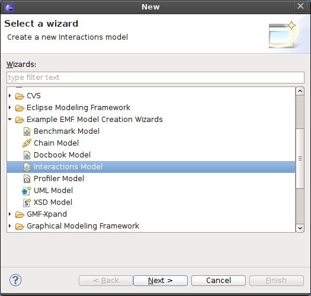
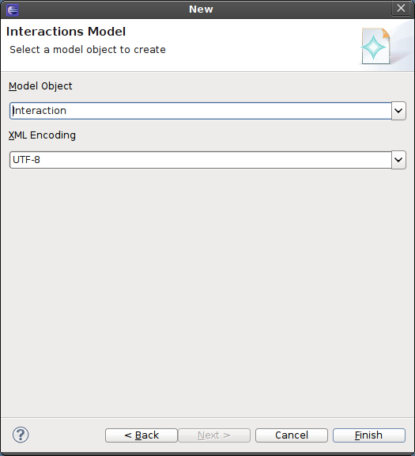
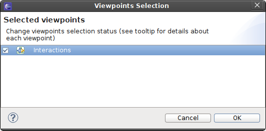
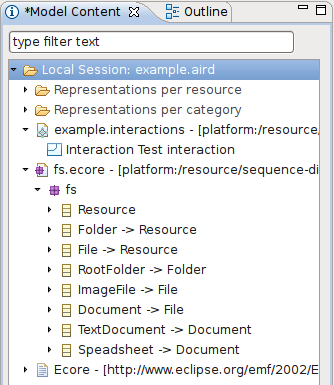
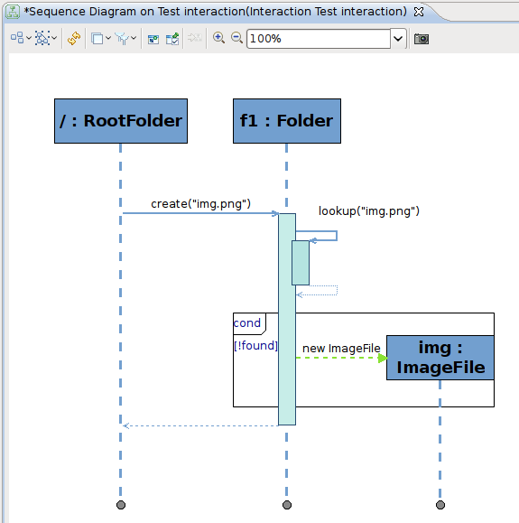

Ecore provides only a static, structural view of a model. If your metamodel also defines behaviors, for example through EOperations, or if you want to specify and document usage scenarios of you metamodel’s concepts, Ecore itself does not provides the necessary concepts. The org.eclipse.sirius.sample.interactions plugins provides a simple metamodel extending Ecore which can describe how EObject can interact over time by sending messages (reading or writing features, invoking EOperations), creating and destroying objects, etc. Here is an overview of that metamodel:

The Interactions viewpoint (defined in org.eclipse.sirius.sample.interactions.design) provides a sequence diagram modeler on this metamodel, with which you can describe the dynamic behavior of your model elements. To use if, follow these steps:
First, you need to create an Interactions model. Launch the Eclipse creation wizard (File > New > Other...), and in the Example EMF Model Creation Wizards section, select Interaction Model:

Choose the location and name of the new file to create, and on the next page, choose the Interaction class as the Model Object:

Create a new session on the .interactions file, and enable the Interactions viewpoint:

Next, add the Ecore model for which you want to specify the behavior. You should have both the .ecore and the .interactions model in the same session, with the Interactions viewpoint enabled.

You can then create a new sequence diagram on the Interaction element which was created as root of the .interactions resource. In the diagram, you can add participants, create messages and executions between them, group these in combined fragments, etc. Use the Properties view to indicate which elements in the Ecore model correspond to these interactions. Here is an example of a resulting diagram:
